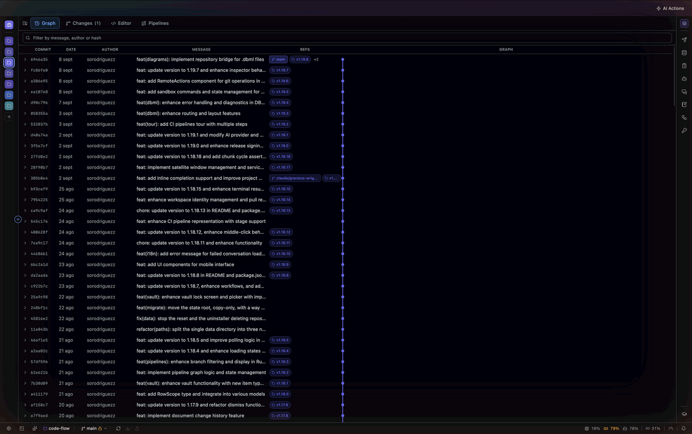
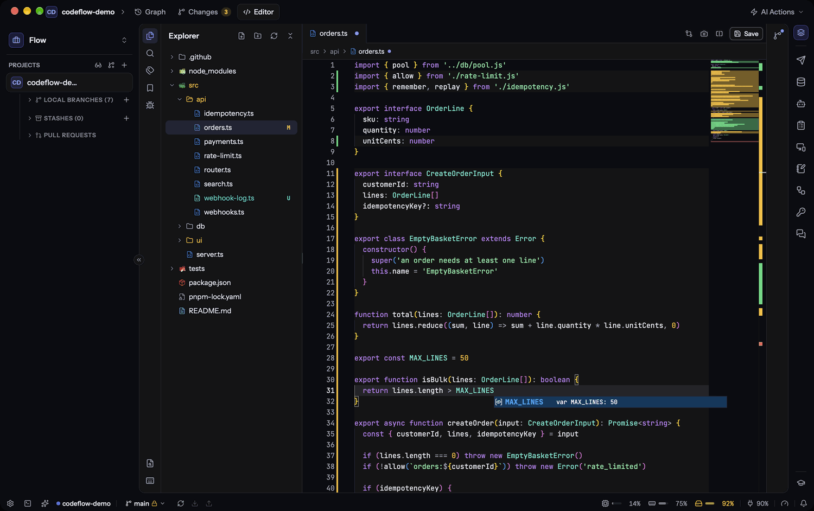
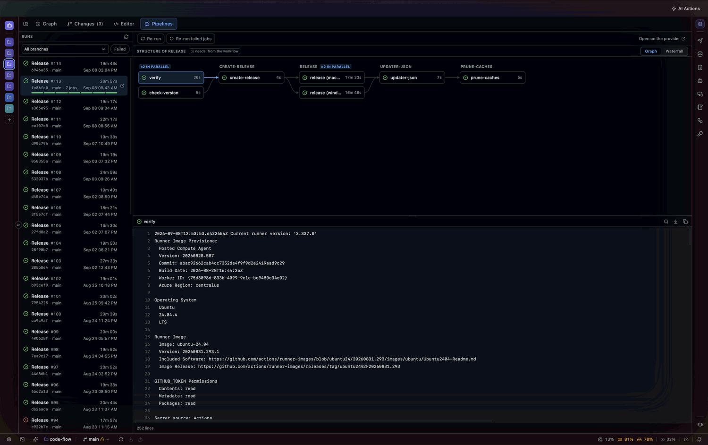
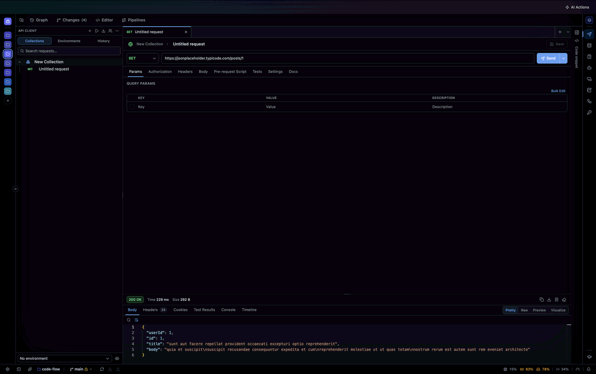
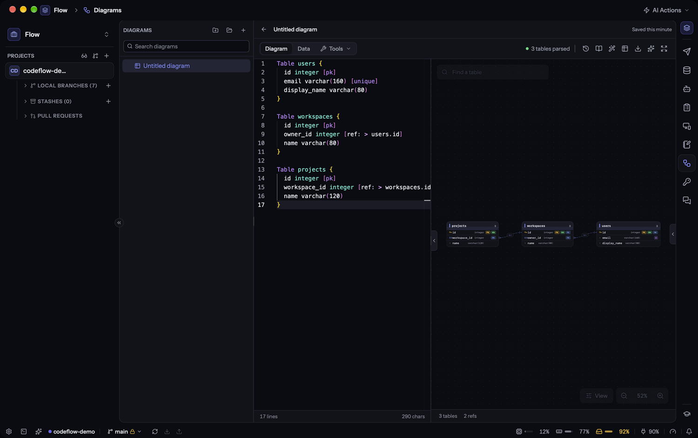
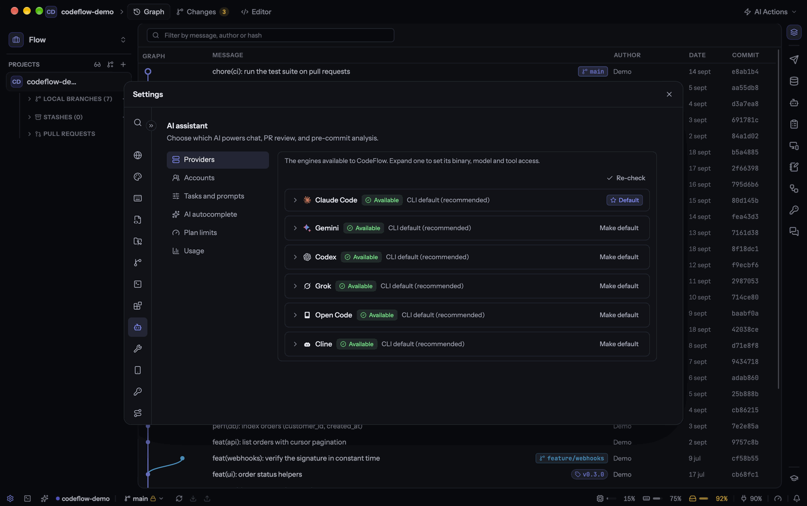
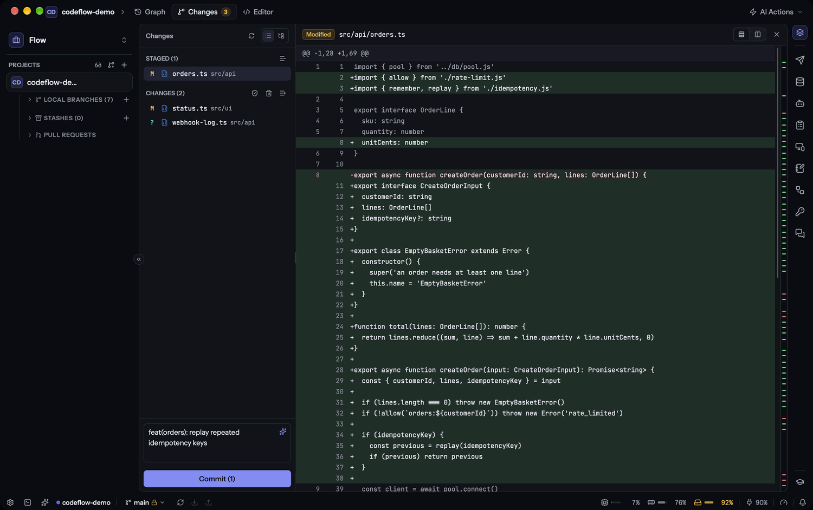
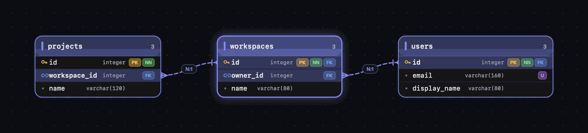
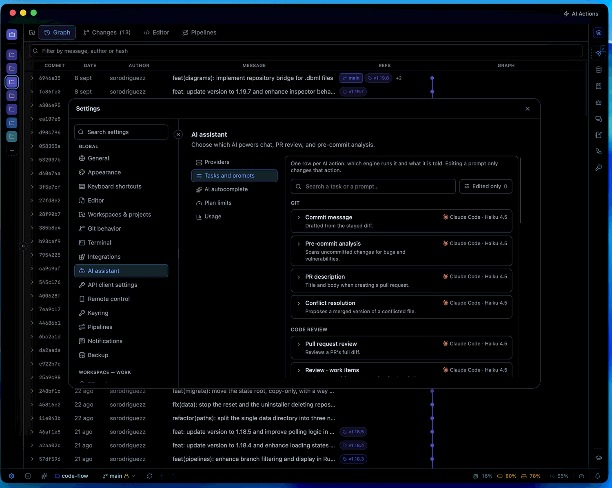

Lee tu historial, revisa el pull request, mira el build que viene detrás y deja que la IA
escriba tus commits, encuentre tus bugs y resuelva tus conflictos. Después prueba el endpoint
que acabas de tocar, consulta la base de datos que hay debajo y entra por SSH a la máquina
donde corre — sin salir de la ventana.
Cada icono del riel es una app completa, no un panel. Todas comparten el mismo workspace:
cambiar de cliente cambia a la vez los repositorios, las colecciones, las conexiones, las
notas y las credenciales. Y ninguna se filtra a la ventana del siguiente cliente.
Git
El historial, legible de un vistazo
Grafo de commits con sus ramas, diff unificado o en paralelo, stashes, remotos y un deshacer commit para cuando te equivocas. El fetch en segundo plano te dice siempre cuántos commits llevas de adelanto o de retraso.
Editor
El mismo Monaco, cableado al repositorio
Ir a definición, hover y diagnósticos vía LSP. Blame en línea sobre la línea del cursor. Editores divididos, borradores que sobreviven a un reinicio, y run & debug por DAP con breakpoints.
Pipelines
Una ejecución no es una lista: es una cascada
El grafo muestra qué corrió en paralelo y qué estuvo esperando — que es donde se fueron los minutos de verdad. Logs con ANSI intacto dentro de la app, y el cronómetro sigue contando mientras el build sigue vivo.
API client
Prueba el endpoint que acabas de tocar
Seis protocolos, colecciones, entornos y variables que se resuelven en URL, headers, body y auth. Importa desde Postman, OpenAPI, Insomnia, HAR o un cURL pegado.
Diagramas
El esquema se dibuja mientras lo escribes
DBML como texto, dibujado en vivo — y el dibujo no es de solo lectura: cada gesto se aplica como una edición de texto, así que ⌘Z lo deshace como una pulsación. Al lado, draw.io completo y offline.

media/git-graph

media/editor

media/pipelines

media/api-client

media/dbml
Grafo de commits — ramas, refs y el diff a un clic.
El riel completo02 / 06
Quince apps que comparten un workspace
Git
Grafo, diffs, ramas, stashes, deshacer commit y escaneo de secretos antes de cada commit.
graph · diff · stash
Pull requests
Lista, revisa, comenta, aprueba y cierra. Varias cuentas por host, y revisión pegando solo el enlace.
github · gitlab · azure
Pipelines
La ejecución como cascada, con logs ANSI dentro de la app y refresco en vivo mientras corre.
actions · gitlab ci · azure
Editor
Monaco con LSP, blame en línea, editores divididos, previsualización Markdown y debug por DAP.
monaco · lsp · dap
Terminal y servicios
Los servicios arrancan en orden de dependencias y cada uno espera una puerta real: un puerto, un probe HTTP, una línea en el log.
deps · health gates
Agentes
Un rol con su propio modelo e instrucciones. Tareas y cadenas con una compuerta humana donde tú digas.
tareas · cadenas · gates
API client
Seis protocolos, colecciones, entornos, scripts de pre-request y tests en JavaScript.
rest · graphql · grpc · mqtt
Bases de datos
Árbol completo, consola SQL con EXPLAIN, edición de filas en grilla y túnel SSH cuando hay bastión.
postgres · mssql · mongo · redis
Diagramas
DBML dibujado mientras escribes, editable desde el lienzo — y el draw.io completo, offline.
dbml · draw.io · sql
Remote
Sesiones SSH con tus llaves, SFTP y FTP en ambos sentidos, port forwarding y almacenamiento en la nube.
ssh · sftp · s3 · azure
Notas
Cuadernos Markdown para la decisión, el runbook y el postmortem, con panel de IA y plantillas.
markdown · plantillas
Llavero
Bóveda con una contraseña maestra estirada con Argon2id y cada elemento sellado con AES-256-GCM.
argon2id · aes-256-gcm
Historias
De un documento a un backlog: criterios en Gherkin, verificados contra tu código y publicados en tu tablero.
gherkin · jira · monday
Wiki
Lee el código y escribe la documentación técnica: por repositorio y por workspace, como sistema.
markdown · publicable
Backups
Cifrados con tu frase, programados y restaurables. En una carpeta, en Google Drive o en OneDrive.
cifrado · programado
Sigue bajando01 / 15
Inteligencia artificial03 / 06
No eliges una IA. Eliges quién hace qué.
Seis motores que enchufas más un séptimo que viene dentro del instalador. CodeFlow detecta
cuáles tienes instalados y te dice lo que falta, en vez de dejarte adivinando por qué algo
no funciona. Una fila por acción: qué motor la ejecuta y qué se le dice.
Modelo por tarea
Un mensaje de commit no necesita tu mejor modelo
El commit lo escribe un modelo local: instantáneo, gratis y sin salir de tu máquina. Lo que quede en «heredar» usa tu proveedor por defecto, así que puedes ignorar la tabla entera si con un modelo te basta.
Donde sí paga
El review del PR se lleva el más capaz que tengas
Y el arreglo de hallazgos, uno con acceso a herramientas, para que edite los archivos de verdad. Cambiar de modelo son dos clics desde el propio chat, sin pasar por Ajustes.
Offline
¿Código que no puede salir de la empresa?
Pon Cline sobre un modelo local con Ollama y todo lo de arriba corre en tu máquina, sin coste por token — arreglar hallazgos incluido, porque Cline conduce el modelo en vez de solo completar texto.
En segundo plano
Nada se pierde por mirar a otro lado
Varias conversaciones a la vez, sin tope. Cambiar de chat, abrir un PR o cerrar el panel no cancela nada: la respuesta aterriza en la conversación que la pidió, la estés mirando o no.
Modelo por tarea
Ajustes › IA
Mensaje de commitInstantáneo, gratis, nunca sale del equipo Local · 0.5B
Análisis pre-commitAlgo rápido: corre en cada cambio Codex
Review de pull requestEl más capaz que tengas: aquí es donde paga Claude Code
Descripción del PREl que mejor escriba Gemini
Arreglar hallazgosCon herramientas, para que edite los archivos Cline · Ollama
Resolver conflictosEl que prefieras, local incluido Open Code
Proveedores
Siete motores. La app te dice cuáles tienes.
Claude Code, Codex, Gemini, Grok, Open Code y Cline se enchufan con su propia sesión — sin
claves de API guardadas en ninguna parte. El séptimo no se instala: viene en el instalador.
Autocompletado local — un llama-server recortado (22 MB en macOS, 38 MB en Windows) escribe texto fantasma mientras tecleas.
Perezoso a propósito — el motor arranca con la primera sugerencia y para cuando dejas de escribir. Nada corre de fondo por haberlo instalado.
Gasto y cuota, separados — un medidor distingue lo facturado por tokens de lo que se ha comido tu suscripción. El que no publica límite lo dice, en vez de inventarse un número.
Cline es la puerta a cualquier endpoint compatible con OpenAI — y llega ahí con herramientas.
Ajustes › Asistente de IA › Proveedores

media/ai-providers
El motor de review
El review se planifica antes de gastar nada
CodeFlow recorta cada archivo a los símbolos que el PR tocó — el método entero, numerado, con
> marcando lo que cambió — reparte el trabajo entre varios revisores en paralelo
y cierra con una pasada cruzada buscando lo que ningún revisor de un solo archivo puede ver.
ALTAEl token se escribe en el log de errorauth.ts:142
MEDIALa firma cambió y dejó atrás a tres llamadoresclient.ts:88
MEDIAEl esquema y el DTO se separaronuser.dto.ts:24
BAJAFalta el índice sobre la clave foráneaschema.sql:61
01
Tres niveles con contrato real
Básico, completo y ultra. Umbral de confianza, severidades, lentes activas y paralelismo se editan en Ajustes, se aplican en código y quedan congelados en cada review guardado.
02
Memoria que se consulta
Lo que ya se descartó sobre esos mismos archivos en otros PRs vuelve como contexto, y quien más referencia los símbolos que tocas llega como pista para cambios de contrato.
03
Sin clonar, si hace falta
¿El repo no está en tu máquina? El diff se lee desde la API del host. Es un review más superficial y se te dice — y lo clonas en un clic para el completo.
04
Pega el enlace y ya
⇧⌘L con la URL del PR: CodeFlow deduce a cuál de tus repos pertenece — aunque esté en otro workspace — y arranca la revisión.
Git
Preparar, commitear y deshacer
Diff unificado o en paralelo, seleccionable para copiar. Ramas, remotos y stashes al alcance.
Y un escaneo de secretos antes de cada commit que te para a tiempo — reglas deterministas,
sin enviar nada a ninguna parte.
Fetch automático en segundo plano: siempre sabes cuántos commits llevas de adelanto o de retraso.
Esconde el ruido: clic derecho en el árbol para ocultar algo de tu vista — un filtro por repositorio que nunca toca el disco ni llega a un commit.
Workspaces: abre varios proyectos y agrúpalos. Cambiar de workspace cambia todo lo demás con él.

media/git-changes
Y además05 / 06
Todo lo que normalmente está en otra app
Tus bases de datos, en la misma ventana
La consulta que necesitas comprobar está a una pestaña de la migración que acabas de escribir. Árbol completo, consola SQL con historial y EXPLAIN, y edición de filas que se prepara localmente: ves las sentencias exactas antes de que corra nada.
Sesiones SSH con tus llaves y los hosts importados de tu ~/.ssh/config en vez de tecleados otra vez. Archivos en ambos sentidos por SFTP y FTP, port forwarding para la base de datos detrás del bastión, y el almacenamiento en la nube en el mismo árbol.
Un esquema en DBML se dibuja mientras lo escribes — y el dibujo no es de solo lectura. Renombra una tabla, añade una columna o traza una relación desde el lienzo: cada gesto se aplica como una edición de texto, así que tus comentarios, líneas en blanco y formato sobreviven intactos. La superficie Datos levanta un SQLite efímero desde el diagrama para llenarlo a mano y consultarlo sin red de seguridad, porque aquí DELETE FROM users es algo que escribes todos los días.

media/dbml-edit
Notas junto al código
Cuadernos Markdown para la decisión, el runbook y el postmortem, con plantillas y un panel de IA que redacta sin salir de la página. Por workspace, para que las notas de un cliente no aparezcan en la ventana de otro.
Llavero
Una contraseña maestra estirada con Argon2id que desenvuelve la clave que sella cada elemento con AES-256-GCM. Sin verificador guardado: una contraseña errónea no desenvuelve la clave, y eso es la comprobación.
Backups que sí restauran
Cifrados con la frase que elijas y todo en un archivo. Programados y al salir, guardando las copias que pidas, donde digas: una carpeta, Google Drive u OneDrive.
Agentes que siguen trabajando cuando tú no
Un agente es un rol con su propio motor: nombre, modelo e instrucciones, escritas una vez. Dale un objetivo y un repositorio y vete: sigue corriendo mientras cambias de vista, y espera en «Te toca» cuando necesita una respuesta tuya. Si un paso falla, la cadena se detiene: reintentar, saltar o abortar. Nunca reintenta sola.

De un documento a un backlog — y al código
Apunta a una página de wiki, una carpeta de Markdown o texto pegado y recibe historias de usuario con criterios en Gherkin listos para Cucumber. Cada historia se puntúa localmente, sin modelo de por medio — es una comprobación que vale la pena precisamente porque es la misma siempre.
Verifica contra tu código: cada criterio recibe un veredicto respaldado por el archivo y la línea que lo prueba.
Publica en Azure Boards, Jira o monday.com — y nada llega al tablero solo.
Construye: una historia, de uno a varios repositorios, en dos fases con una compuerta humana en medio.
Tu teléfono, como segunda pantalla
Enciende el servidor de control remoto, pon los seis dígitos en el navegador del móvil y ya. Sin tienda de apps, sin cuenta, sin nada publicado a internet. Cada dispositivo se revoca uno a uno desde el escritorio.
Ventanas propias
Cualquier app del riel puede desprenderse a su propia ventana. Desprender mueve, nunca duplica: no hay forma de pedir dos ventanas sobre lo mismo, así que nunca acabas con dos editores sobre un archivo pisándose.
Y hazla tuya
Tema claro, oscuro o del sistema con el color de acento que quieras. Interfaz en español e inglés. Paleta de comandos, atajos reconfigurables, el orden del riel en tus manos y un tour guiado que puedes dejar y retomar.
En movimiento
Míralo funcionando
media/demo.mp4
Seguridad y privacidad06 / 06
Es una app de escritorio. El único servidor es el que tú enciendes.
Sin cuenta
Ni telemetría
No hay que registrarse en nada. El servidor de control remoto es el que enciendes tú, en tu propia red, y lo vuelves a apagar.
Llavero del SO
Tus tokens, nunca en texto plano
Los PAT y las contraseñas de las bases de datos van al llavero del sistema operativo, no a la base de datos de la app.
Por usuario
Datos en tu propia cuenta
La base de datos, los ajustes y la bóveda viven en los datos de aplicación de tu usuario, donde otra cuenta de la misma máquina no puede leerlos.
Offline
Dos caminos completos
Cline sobre Ollama para lo conversacional y el motor incluido para el autocompletado. Tu código nunca sale de la máquina.
Antes del commit
Escaneo de secretos
Detecta claves de API, tokens y llaves privadas y te para a tiempo. Reglas deterministas, sin enviar nada a ninguna parte.
Tuyos
Repos y backups intocables
La app no los borra nunca: ni al restablecer, ni al desinstalar. Viven en tu carpeta y ahí se quedan.
Descarga
Ábrelo y ya
Descarga el instalador, ábrelo y listo. La app se actualiza sola cuando aparece una versión
nueva, y puede seguir viva en la bandeja para que tus terminales y tareas de IA no se caigan
al cerrar la ventana.